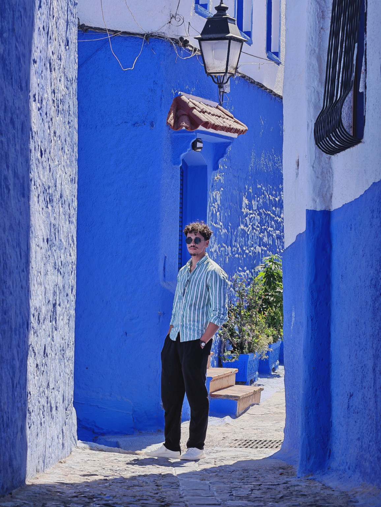

01 / ATTENTION
What gets noticed?
People don't process everything around them. Context determines what gets through.
Copywriting, behavioral thinking and growth systems — connected through one question: what makes people pay attention, trust, decide and act?

Decisions are shaped by attention, emotion, context, friction, trust, incentives and perception. Understanding those forces changes how you write, design and build.
Before asking what to write, what to sell or what channel to use, I look at the person on the other side.
Good copy is not decoration. It connects attention, interest, trust, desire and action.
Traffic alone is not the system. Message, trust, conversion and retention have to connect.
I am interested in the invisible forces behind everyday decisions — and how they can inform communication, offers and digital experiences.
Personal experiments and learning projects. Not presented as commercial client work.
An AI-powered Moroccan lesson-plan project built while learning web development, Laravel, JavaScript and APIs.
PERSONAL PROJECTA personal copywriting and growth practice focused on customer communication, offers, landing pages and conversion thinking.
PERSONAL EXPERIMENTAn experimental lead-finding and automation concept exploring Python, interfaces and AI-assisted workflows.
EXPERIMENTExperiments with AI tools, Blender, visual design and interactive digital presentation.
PERSONAL LABTechnical foundation through industrial electricity studies and practical exposure.
Learning through commerce, selling, markets and practical experimentation.
Moving deeper into persuasive communication, behavioral thinking, growth and digital systems.
Learning by building projects, testing ideas and turning concepts into working systems.